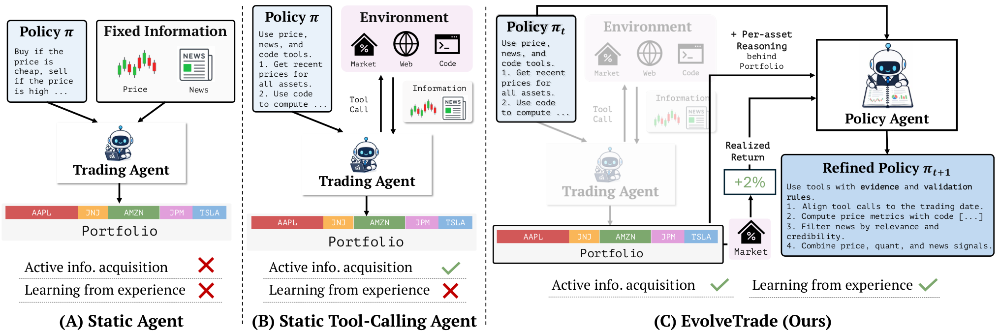
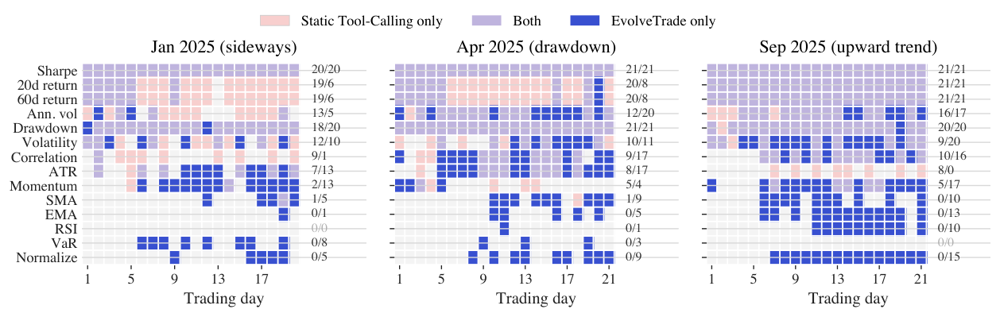
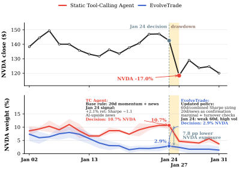

信息与程序都固定
从预定义窗口读取价格和新闻，不主动获取信息，也不从结果中修改程序。
EvolveTrade: Experience-Driven Policy Refinement for Self-Evolving LLM Trading AgentsSehee Kim、Yumin Choi、Minki Kang、Sung Ju Hwang · KAIST / DeepAuto.ai · 2026-09-15
EvolveTrade 最值得带离交易领域的洞见，是把 Capability Learning 与 Capability Activation 分开：模型可能早已知道某个分析方法，真正缺失的是在正确环境状态下把它调出来的 Context / Policy。
传统 LLM 交易系统通常优化“给定信息后如何决策”：静态 Agent 接收预装的价格与新闻，带工具 Agent 则主动调用价格、新闻和代码解释器。但两者共享一个更深的固定项——决定何时调用什么工具、用哪些指标、如何验证信号的系统提示词，在部署前写好，部署后不再变化。模型能力可能很宽，实际被提示词激活的分析词汇却很窄。
论文用 GPT-5-mini 在 2025 年 1 月横盘、4 月回撤与 9 月上涨三个窗口做动机实验。固定工具策略几乎每天重复 Sharpe、20/60 日收益、年化波动和回撤，而 RSI、EMA、VaR 与信号归一化几乎从不出现。也就是说，同一套程序面对不同市场状态，只是在重复执行预设清单；“工具可用”并不等于“工具使用能够适应”。
从预定义窗口读取价格和新闻，不主动获取信息，也不从结果中修改程序。
能调用价格、新闻与代码工具，但调用规则、验证流程与风控指令固定。
使用交易轨迹和已实现反馈，周期性重写整套工具使用政策。
这使 training-free 自进化出现两条不同路线。第一条继续补能力，第二条不改变参数，而是改变能力被调用的条件；随着基础模型能力变宽，后者的重要性会持续上升。
通过训练、记忆或技能积累，获得此前不存在或不可复用的新能力。
模型与工具不变，Context / Policy 改变实际被调用的能力集合。
不是把所有规则塞进 Prompt，而是依据状态检索适用策略与工具流程。

静态 Agent 没有主动取证；静态工具 Agent 可以主动取证，却没有经验学习；EvolveTrade 增加 Policy Agent，把逐资产理由和已实现收益转成下一批交易使用的新政策。
阅读要点：这张图最重要的箭头不是“工具调用”，而是从组合结果返回 Policy Agent、再进入新政策的外循环。内层交易模型可以保持冻结，外层程序仍在变化。
与最近邻工作的区别应按“什么被更新”来读，而不是只看是否使用了 LLM。下面四类方法分别改变记忆、离线工作流、高层交易策略或完整操作政策；EvolveTrade 的新意集中在最后一类。
保存成功与失败经验，改变未来上下文；但工具协议通常仍由固定提示词规定。
用验证集或搜索信号先优化程序，再部署；不等同于从部署中的连续反馈在线更新。
进化高层交易观点与策略，但把工具调用协议保持固定。
重写完整系统政策，直接改变取证、计算、验证、仓位与输出流程。
系统没有训练新的交易模型；它让一个 Policy Agent（Master）读取执行 Agent（Worker）的轨迹和结果，再重写 Worker 下一阶段遵循的系统政策。这个 Master–Worker 结构很简洁，但最难的 Credit Assignment 被交给了 LLM 的叙事性诊断。
第 t 天，交易 Agent 接收当前政策 πt、日期、上一日组合状态和三个工具：价格检索、新闻搜索、Python 代码解释器。它在统一时间截断下主动获取信息，输出一个仅做多的资产与现金权重向量，同时为每个资产留下决策理由。模型参数、工具接口以及可交易资产集合全程固定。
环境随后返回组合日收益、逐资产收益、执行后权重与组合状态。论文强调，收益本身是含噪且多义的：亏损可能来自坏程序，也可能只是不可避免的市场冲击；盈利也可能来自正确分析或纯粹运气。因此更新器同时读取“做了什么、为什么做”和“后来发生什么”，试图把结果追溯到可修改的程序规则。
更新指令要求把具体轨迹观察链接到当前提示词的具体行，做有根据的局部修订，而不是泛泛地“更谨慎”。一次更新可以改变查询写法、指标选择、新闻与价格的交叉验证、仓位约束、换手检查和最终输出结构。这个设计的优势是可审计：更新后的 Artifact 是人类可读的文本，而不是难以定位的权重变化。
但“理由 + 结果”仍不等于因果证据。Policy Agent 试图完成的是 Outcome → Behavior → Prompt Clause → Modification；其中最后一步很容易，真正困难的是确认某个结果是否由那条行为或政策条款造成。论文要求更新必须具体、有根据，却没有为每次 Mutation 提供反事实、A/B、多次 Rollout 或独立 Verifier。因此它完成的是 Narrative Attribution，而不是 Experimental Attribution。
这也引出一个更一般的架构选择：Evolution Object 应该是什么？Prompt 的优点是 training-free、通用、可读、任何 LLM 都能修改；但这些工程优势并不自动意味着它是最可扩展的长期知识表示。
| 对象 | 改变什么 | 主要优势 | 主要风险 |
|---|---|---|---|
| Model Parameter | 模型内部能力与偏好 | 可形成参数内新能力 | 训练成本高、更新慢、难审计 |
| Memory | 可检索事实与经验 | 增量、外部化、易删除 | 检索与信用分配可能失真 |
| Skill / Strategy / Workflow | 条件化的可复用程序 | 可路由、可验证、可版本化 | 需要 Scope、冲突与生命周期治理 |
| Global System Prompt | 整个操作政策 | 简单、training-free、立即生效 | 局部经验易变成全局规则，产生干扰与漂移 |
| Tool / Harness | Agent 的动作空间与运行系统 | 能改变能力边界和执行结构 | 验证成本、系统风险与搜索空间更大 |
表中 EvolveTrade 的 Prompt 更新范围来自论文 §5 与 Appendix G–H；其余对象的优劣是用于研究定位的编辑性综合，不是论文实验结论。
这里的“自进化”也应限定在文本政策层。更新器没有修改自身更新算法，没有证明多代递归改进的无界增长；它展示的是同一个固定更新规则反复修改交易政策。因此，更准确的表述是在线、外部、可读的 Policy Refinement，而不是模型权重意义上的持续学习。
论文最可信的结论不是“自进化总能赚钱”，而是“修改工具使用程序经常改变风险—收益表现，但收益强烈依赖行情、骨干模型与更新轨迹”。
实验在 LiveTradeBench 式每日收盘仿真中进行，资产池为 15 只美国蓝筹股和现金。GPT-5-mini 与 Gemini-2.5-Flash 分别使用其知识截止日之后的三个一个月窗口；每种 LLM 配置运行三次，报告均值。对照同时拆开了工具访问、政策进化和高层策略进化：Static Base、Static Tool-Calling、EvolveBase、EvolveStrategy 与完整 EvolveTrade。
下面只重排论文 Table 1 的 LLM 方法结果，以便直接观察核心比较。每个单元格为“年化 Sharpe / 累计收益%”；最佳并不跨行情比较，而是在同一模型、同一月份、同一评价协议内比较。
| 方法 | 1 月 · 横盘 | 4 月 · 回撤与修复 | 9 月 · 上涨 |
|---|---|---|---|
| Static Base | 1.55 / 1.89 | −1.66 / −5.06 | 5.88 / 4.15 |
| Static Tool-Calling | 2.87 / 3.30 | −1.54 / −4.71 | 6.45 / 4.86 |
| EvolveBase | 1.41 / 1.82 | −2.87 / −7.58 | 5.29 / 3.80 |
| EvolveStrategy | 3.86 / 4.70 | −3.09 / −6.85 | 7.76 / 4.78 |
| EvolveTrade | 5.12 / 5.10 | −2.53 / −6.60 | 8.43 / 6.84 |
| 方法 | 2025-11 · 熊市 | 2026-02 · 横盘 | 2026-04 · 牛市 |
|---|---|---|---|
| Static Base | −1.89 / −1.73 | −2.04 / −1.83 | 9.07 / 11.64 |
| Static Tool-Calling | −1.99 / −2.24 | 2.70 / 2.29 | 6.62 / 4.73 |
| EvolveBase | −2.28 / −2.16 | −1.70 / −1.38 | 7.98 / 10.50 |
| EvolveStrategy | −1.04 / −1.16 | 3.92 / 3.52 | 3.66 / 2.23 |
| EvolveTrade | −1.03 / −1.07 | 2.75 / 2.92 | 4.73 / 3.69 |
来源：论文 Table 1；↑ 指标均为越高越好。这里只选取 SR 与 CR 两项，并保留所有 LLM 方法行；原表另报 MDD、胜率与日波动率。论文 Appendix C 报告三次运行的标准差。
按这个证据，EvolveTrade 在 GPT-5-mini 的 1 月和 9 月、Gemini 的 11 月取得 LLM 方法最佳 SR 与 CR；Gemini 2 月落后 EvolveStrategy、居第二；两个 4 月窗口则由固定策略领先。尤其是 2026 年 4 月牛市，EvolveTrade 平均现金权重达到 40.1%，比 Static Base 高 35.9 个百分点，显著错过上涨；2025 年 4 月也多持有 10.1 个百分点现金。论文自己的失败分析因此指向一个具体机制：过去的坏经验可能被总结成“更保守”的全局规则，当市场转向时，这条旧经验就变成 Strategy Staleness。
论文补充了一个 50 交易日实验：GPT-5-mini 下，EvolveTrade 的 SR 为 4.00、CR 为 10.56%，高于 Static Tool-Calling 的 2.94 / 8.88 和 EvolveStrategy 的 3.27 / 6.94。政策长度会增长，也会因合并冗余规则而阶段性收缩，因此它不是简单 Append；但 Rewrite / Consolidate 仍把长期知识留在同一份全局 Prompt 中。50 天缓解了“必然单调膨胀”的担忧，却没有解决 500–1000 天尺度上的规则冲突、过期策略、适用范围与路由问题。
论文的强处是没有只报组合收益，而是追踪“政策文本 → 工具行为 → 指标选择 → 仓位 → 次日收益”。但这些分析主要支持程序发生了改变与个别组件有用，尚不足以证明长期收益由正确的市场机制学习造成。
第一层证据是分析覆盖范围。固定工具 Agent 在三种行情里重复相似指标；EvolveTrade 开始在 4 月回撤中调用 VaR 与信号归一化，在 9 月上涨中调用 SMA、EMA 与 RSI。与此同时，它减少部分重复指标。这个结果直接支持“政策重写改变了模型实际激活的分析能力”。

紫色表示两者都调用，红色表示仅固定工具 Agent 调用，蓝色表示仅 EvolveTrade 调用。蓝色块集中出现在此前从未使用的风险、趋势与信号归一化指标上。
阅读要点：这张图证明“行为改变了”，并且改变与行情语义相符；它不能单独证明这些新增指标造成了收益提升，因为指标数量、调用次数、提示长度和风险偏好也同时变化。
第二层证据是工具分配。价格工具仍接近每日一次，新闻搜索没有总体增加，而代码执行从约每日 1 次上升到 2.6–4.5 次。这说明系统不是简单扩大所有调用预算，而是把行为从外部文本检索转向可执行计算。不过，论文没有给出与额外代码调用完全预算匹配的静态基线，所以“程序更好”与“测试时计算更多”仍未完全分离。
第三层证据是案例归因。2025 年 1 月 24 日，Static Tool-Calling 平均持有 10.7% NVDA，EvolveTrade 因为新政策更重视 60 日风险调整证据、把短期指标和新闻降为确认信号，并加入换手与组合改善检查，只持有 2.9%。下一交易日 NVDA 下跌 17.0%，两者组合收益分别为 −1.11% 与 −0.03%，按正文给出的均值相差约 1.08 个百分点。

案例展示了政策如何改变风险证据的优先级，并通过更小的 NVDA 暴露减少次日损失。
谨慎解读：这是事后可解释的个案，不是稳定因果效应。若换一个价格路径，更低仓位也可能错过上涨；需要跨大量相似事件的预注册归因，才能证明规则在分布上可靠。
更新频率实验进一步暴露了这个控制回路的关键矛盾：反馈太少会把随机涨跌误写成规则，积累太久又可能错过状态变化。四个固定间隔的结果呈现非单调关系。
| 更新间隔 | SR ↑ | CR% ↑ | MDD% ↓ | 胜率% ↑ | 波动% ↓ |
|---|---|---|---|---|---|
| 1 天 | 1.92 | 0.16 | 4.58 | 61.5 | 1.13 |
| 3 天 | 3.25 | 0.97 | 4.46 | 62.7 | 1.13 |
| 5 天 | 3.67 | 1.78 | 4.26 | 61.7 | 1.17 |
| 7 天 | 3.50 | 1.54 | 4.55 | 60.6 | 1.21 |
来源：论文 Table 3。5 天在 SR/CR 上最好，但并非所有风险指标都最好；论文据此采用“适应与稳定的折中”解释。
这个消融对自进化研究比对交易更重要：日更最差意味着修改频率本身是控制变量。系统必须在 Plasticity 与 Stability 之间选择——更新太快会把噪声写进政策，更新太慢又可能错过分布变化。论文找到一个经验上较好的固定 N=5，却尚未让 Agent 学会判断“现在是否值得更新”。
更完整的 Evolution Trigger 不应只看日历。它至少需要回答四个问题，并在证据不足时选择不更新；这部分是从论文消融延伸出的架构推论，而不是作者已经实现的模块。
样本量与信号一致性是否足以支持修改，而不是单日偶然结果？
环境状态是否真的偏离现有策略的适用范围，而非正常波动？
失败能否稳定归因于当前程序，而不是外生冲击或执行噪声？
候选修改是否经过验证，并达到部署、回滚与监控所需的置信门槛？
交易摩擦方面，论文以成交金额 10 bps 比例费用重新计算：EvolveTrade 在原先领先的三个窗口仍保持 LLM 方法第一，并在六个窗口中都比 Static Tool-Calling 与 EvolveStrategy 有更低换手。这排除了“收益只来自更激进换仓”的一种解释，但作者也明确承认未建模滑点、市场冲击与流动性；因此还不能把回测表现外推为可执行收益。
EvolveTrade 证明了“环境反馈 → Context-level Policy Evolution”能够改变行为；它还没有证明每次修改值得部署。关键跃迁不是更会写 Prompt，而是从 Reflection 走向 Hypothesis、Experiment、Validation 与 Conditional Strategy。
论文真正改变了问题表述：以往把模型和工具之间的编排视为工程常量，EvolveTrade 将其视为部署期可学习对象。即使未来具体的提示词更新器被别的方法替代，这个观念仍有迁移价值——复合 Agent 的能力来自“模型 × 工具 × 程序”，冻结权重不代表系统不能学习。
但反馈链条存在根本识别难题：真实目标是长期、风险约束后的可执行收益；实验用短窗口回测指标衡量；Policy Agent 实际读取单日或小批次的已实现收益与自述理由。模型自己的 rationale 未必忠实，收益又受到未观测市场冲击影响，因此“坏结果 → 坏程序”不是可靠等价。4 月窗口的过度持现正是这种误归因可能造成的制度化副作用。
把它放进 training-free 自进化研究谱系，当前系统停在第三步：从经验中诊断全局 Policy。更强的主动实验系统会先提出可证伪假设，再用多个候选和受控 Rollout 决定是否部署，并把通过验证的结果保存成有适用范围的 Strategy / Skill / Workflow。
下面五个边界会直接改变如何理解论文。前两项有论文明确结果支撑，后三项是基于系统结构的编辑性推断；每一项都对应一个能明显提高可信度的判别实验。
证据暴露。每次 LLM Diagnosis 后直接 Rewrite 并 Deploy，没有证明新政策优于旧政策，也没有证明被修改条款造成了原结果。决定性检查是候选 Policy 的反事实回放、多 Seed / 多 Rollout、独立评估和部署门控。
论文明确 / 证据暴露。两个 4 月窗口分别多持有 10.1 和 35.9 个百分点现金并落后强固定基线，显示局部坏经验可能生成过度保守、跨状态失效的规则。决定性检查是策略 Scope、过期机制、回滚与漂移监控。
编辑性推断。即使 Rewrite 会压缩冗余，单一 Prompt 仍缺少 Trigger、Scope、冲突消解、置信度和 Expiration。决定性检查是与“稳定系统提示 + 条件策略库 + 状态路由”在相同预算下比较长期迁移和遗忘。
论文明确。六个单月窗口、15 只蓝筹、两个骨干与一个 50 日延长实验不足以建立长期稳定性；10 bps 费用也未计滑点、冲击和流动性。决定性检查是跨多年、跨资产、订单级执行或前瞻纸面交易。
编辑性推断。缺少“固定 Prompt + 相同代码预算 / 风险检查”和简单状态路由基线；Policy Agent、额外代码执行、监控与审计成本也未闭合。应同时报告收益、Token、延迟、费用与人工复核的 Pareto 曲线。
因此，这篇论文最值得带走的不是 6.84% 或 10.56% 这两个收益数字，而是三条更一般的结论。第一，自进化不一定学习新能力，也可以重新激活已有能力。第二，Evolution Object 的选择决定系统能否长期管理知识：Prompt 简单，但 Strategy / Skill / Workflow 更容易条件化、验证和路由。第三，Experience → Reflection → Update 只是干净的 Baseline；下一步应是 Experience → Hypothesis → Experiment → Validation → Generalizable Strategy。
主要来源：EvolveTrade, arXiv:2609.17632v1（2026-09-15），包括正文、Appendix C–H 与论文原图。本文未做独立回测或交易复现；所有数值均按论文公开结果转录，批判性判断已与论文报告分开标注。本文不构成投资建议。
← 返回论文合集